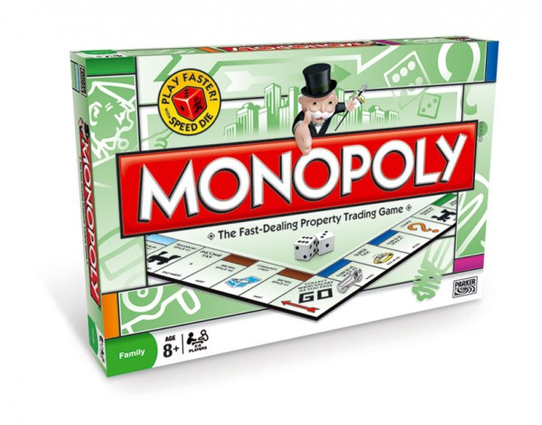
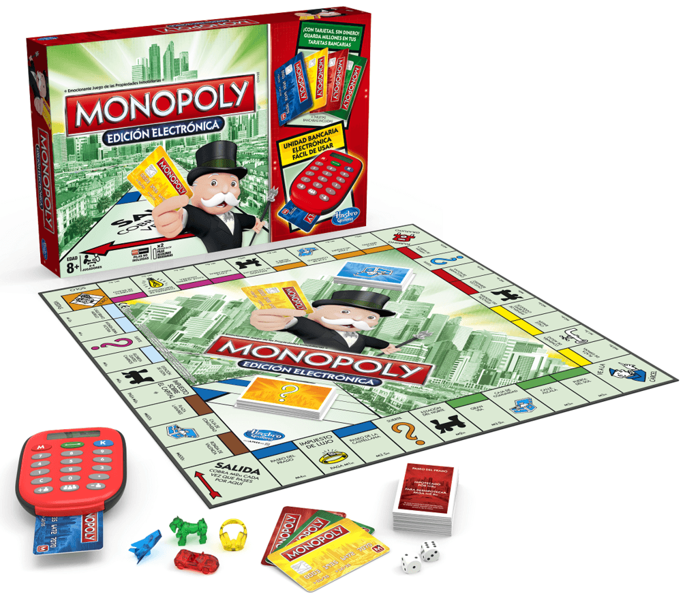

EL JUEGO MAS VENDIDO DE LA HISTORIA
ANTES
Un juego creado para servir como herramienta para enseñar las teorias acerca de la justicia social y economica extraidas del estudio titulado progreso y misterio de hernie y Geoge
MONOPOLY
Comercializado por primera vez en 1936
a lo largo de 80 años el juego ha sufrido una notable evolucion sus multiples ediciones y sus tantas versiones ha dado pie ha que se cambiara desde la caja que lo contiene hasta los elementos que lo componene logrando asi manterse como favorito a traves de las decadas.
AHORA
con los años el juego cambio para solo distrutar un buen rato, negociamos propiedades y hasta haciendo uso de medios electronicos para todas las transacciones que requiere el juego.
